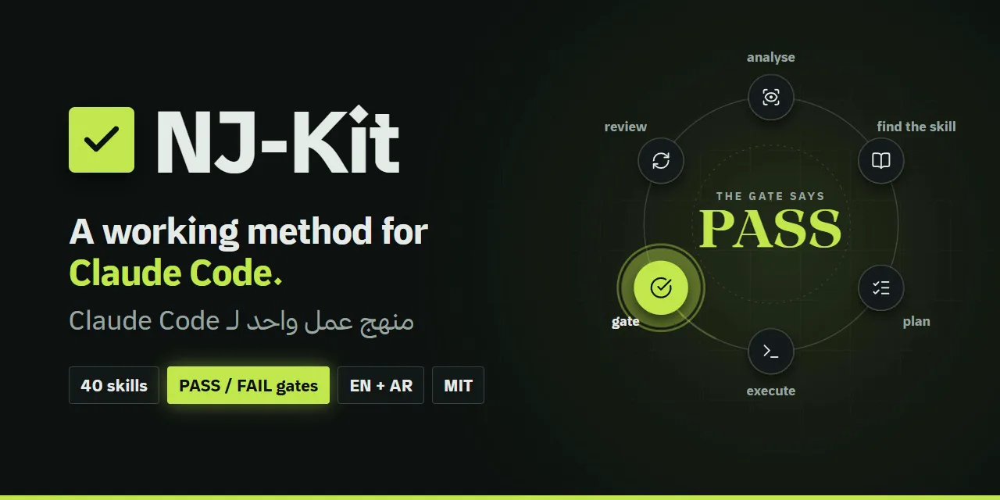
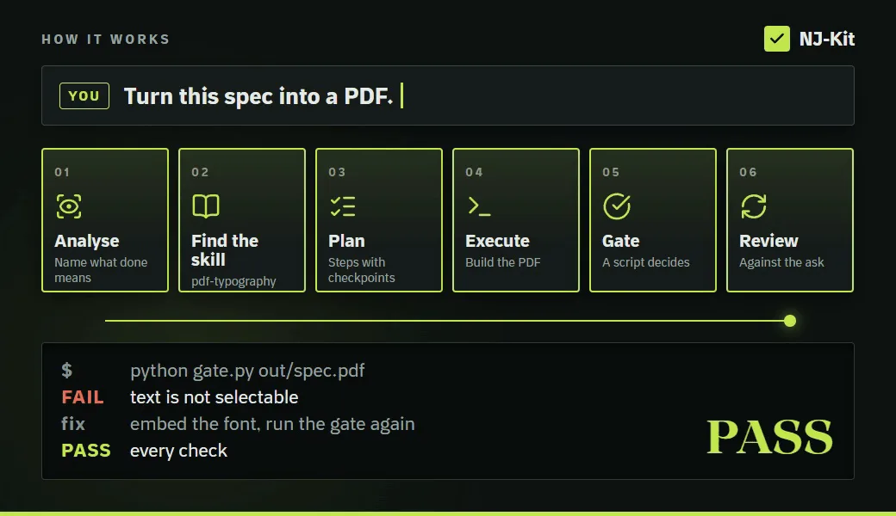

One method for every requestمنهج واحد لكل طلب
A tested skill first. Then a check against your request.مهارة مُختبَرة أولًا، ثم مراجعة مقابل طلبك.
- analyse
- find the skill
- plan
- execute
- gate
- review
- حلّل
- ابحث عن المهارة
- خطّط
- نفّذ
- افحص
- راجع
40 skills, one method. Every skill ends in a script that says PASS or FAIL.40 مهارة ومنهج واحد. كل مهارة تنتهي بسكربت يقول PASS أو FAIL.
A free method and 40 skills for Claude Code.منهج مجاني و40 مهارة لـ Claude Code.
A script prints PASS or FAIL. No "should work".سكربت يطبع PASS أو FAIL، لا «يُفترض أن يعمل».
Paste 2 lines. 1 minute.الصق سطرين. دقيقة واحدة.

NJ-Kit is a free, open-source Claude Code plugin: one working method and 40 skills. Each skill ends in a script that prints PASS or FAIL, so "done" means a check ran.NJ-Kit إضافة مجانية ومفتوحة المصدر لـ Claude Code: منهج عمل واحد و40 مهارة. تنتهي كل مهارة بسكربت يطبع PASS أو FAIL، فيعني «تم» أن فحصًا جرى فعلًا.
The plugin, or the kit installer.الإضافة، أو مثبّت الحزمة.
Ask for work as usual.اطلب العمل كما تفعل عادةً.
PASS or FAIL, from a script. No "should work".PASS أو FAIL من سكربت، لا «يُفترض أن يعمل».

23 come with the plugin. The kit installer adds 17. Tap a group.23 مع الإضافة، ويضيف مثبّت الحزمة 17. اختر مجموعة.
nj-methodThe default method for every request: analyse, find a skill, plan with checkpoints, execute, review.المنهج الافتراضي لكل طلب: حلّل، وابحث عن مهارة، وخطّط بنقاط تحقق، ونفّذ، وراجع.nj-delegateGovernance for agent teams: a Lead decides, workers build, helpers do bounded work.حوكمة فرق الوكلاء: القائد يقرّر، والعمّال يبنون، والمساعدون يؤدّون مهامّ محدودة.nj-agent-opsThe transport layer: results through files, bad telemetry refused at write time.طبقة النقل: النتائج تمرّ عبر الملفات، والقياسات غير الصالحة تُرفض لحظة كتابتها.nj-superviseHow to brief a worker and know it is actually working.كيف تكلّف عاملًا وتتأكد أنه يعمل فعلًا.session-handoffClose a session with a handoff.md the next one reads first.أغلق الجلسة بملف handoff.md تقرؤه الجلسة التالية أولًا.nj-learnCapture a lesson where it will be read again.دوّن الدرس حيث سيُقرأ مرة أخرى.nj-wrapupClose a session or a tested service end to end, through gates.أغلق جلسة أو خدمة مُختبَرة من أولها إلى آخرها، عبر بوابات فحص.devilRanked objections to a plan before you act on it.اعتراضات مرتّبة على الخطة قبل أن تنفّذها.nj-security-reviewAudit third-party skills, plugins and MCP servers before installing.دقّق مهارات الأطراف الخارجية وإضافاتها وخوادم MCP قبل التثبيت.nj-jiraAnalyse a ticket, file Bugs with evidence, re-check QA, keep a tracker.حلّل التذكرة، وسجّل الأخطاء بأدلتها، وأعد فحص الجودة، واحتفظ بسجل متابعة.nj-jira-to-automationTurn a ticket into a runnable automation.حوّل التذكرة إلى اختبار آلي قابل للتشغيل.nj-qa-pipelineFrom a Jira ticket to notes, a staging check, an acceptance report and automation.من تذكرة Jira إلى ملاحظات، ففحص على بيئة التجهيز، فتقرير قبول، فأتمتة.nj-automation-suiteScaffold a portable, self-contained Playwright suite.أنشئ حزمة اختبارات Playwright محمولة ومكتفية بذاتها.nj-rankRegister finished work with its evidence and file it as Done.سجّل العمل المنجز مع أدلته وأغلقه بحالة Done.pdf-typographyPDFs whose text stays real: selectable, searchable, then audited.ملفات PDF يبقى نصها حقيقيًا: قابلًا للتحديد والبحث، ثم يُدقَّق.arabic-english-proofreadingHamza, taa marbuta, bidi characters, mixed numerals, Latin punctuation in Arabic.الهمزة، والتاء المربوطة، ورموز الاتجاه الخفية، والأرقام المختلطة، وعلامات الترقيم اللاتينية داخل النص العربي.workflow-diagramWorkflow figures drawn from evidence, BPMN-correct.مخططات سير عمل مرسومة من الأدلة ومتوافقة مع BPMN.nj-writerNarration and script words, Arabic or English.نصوص التعليق الصوتي والسيناريو، بالعربية أو الإنجليزية.impact-copyImpact-first, metric-driven copy.نصوص تبدأ بالأثر وتستند إلى الأرقام.website-fine-printPre-ship site audit: privacy, hygiene, policy pages.تدقيق الموقع قبل إطلاقه: الخصوصية، وسلامة الصفحات، وصفحات السياسات.voice-cleanMaster a voiceover to broadcast loudness with ffmpeg only.اضبط التعليق الصوتي على مستوى ارتفاع البث باستخدام ffmpeg وحده.bg-musicLicence-cleared music beds and sound effects, with credit lines.موسيقى خلفية ومؤثرات صوتية مرخّصة، مع سطور الإسناد.nj-directorPlan the picture of a 30 to 90 second film: beat sheet, shots.خطّط صورة فيلم مدته من 30 إلى 90 ثانية: تسلسل اللحظات واللقطات.Research, design and decks, plus third-party design skills and graphify. Among them:البحث والتصميم والعروض، إضافة إلى مهارات تصميم من أطراف خارجية وgraphify. منها:
Every skill ends with a script gate: PASS or FAIL.كل مهارة تنتهي ببوابة فحص من سكربت: PASS أو FAIL.
A tested skill first. Then a check against your request.مهارة مُختبَرة أولًا، ثم مراجعة مقابل طلبك.
A skill can't say PASS unless the check ran.لا تقول المهارة PASS إلا إذا جرى الفحص فعلًا.
Right-to-left included, with a proofreader for Arabic text.مع دعم الكتابة من اليمين إلى اليسار، ومدقق لغوي للنص العربي.
A Lead decides, workers build, helpers do bounded work.القائد يقرّر، والعمّال يبنون، والمساعدون يؤدّون مهامّ محدودة.
Copy one folder into ~/.claude/skills/ and it works on its own.انسخ مجلدًا واحدًا إلى ~/.claude/skills/ ويعمل وحده.
Set the variables a skill names, or keep the defaults.اضبط المتغيرات التي تذكرها المهارة، أو أبقِ القيم الافتراضية.
Free and open source under the MIT licence. Read every line before you install.مجانية ومفتوحة المصدر برخصة MIT. اقرأ كل سطر قبل أن تثبّتها.
Not affiliated with or endorsed by Anthropic.غير تابعة لشركة Anthropic ولا معتمدة منها.
~/.claude/secrets/.المفاتيح والروابط تأتي من بيئتك أو من ~/.claude/secrets/.rm -rf.إلى سلة المحذوفات، وليس rm -rf أبدًا.For Claude Code. Paste these two lines:لـ Claude Code. الصق هذين السطرين:
/plugin marketplace add NJ-Burrito/NJ-Kit
/plugin install nj-kit@nj-kitThen say "use nj-method". You have 23 skills.ثم قل "use nj-method". صارت لديك 23 مهارة.
The whole setup on a new machine. Needs Python 3.10+.الإعداد كاملًا على جهاز جديد. يحتاج إلى Python 3.10+.
git clone https://github.com/NJ-Burrito/NJ-Kit
cd NJ-Kit
python nj-kit/scripts/install.py --check # preview, changes nothing
python nj-kit/scripts/install.py # install
python nj-kit/scripts/fetch_assets.py --all # download NJ-Kit assets v1~/.claude/skills/.تُثبَّت المهارات في ~/.claude/skills/.--scope project puts them in one repo.الخيار --scope project يضعها في مستودع واحد.fetch_assets.py checks each file's sha256.يتحقق fetch_assets.py من بصمة sha256 لكل ملف.For any agent that reads SKILL.md. One folder, no installer.لأي وكيل يقرأ ملفات SKILL.md. مجلد واحد، بلا مثبّت.
A typeface by Nader Alzghoul. Windows, macOS, Linux or web.خط من تصميم نادر الزغول. Windows وmacOS وLinux والويب.
Get it on GitHubاحصل عليه من GitHubNJ-Kit is a free, open-source Claude Code plugin: one working method and 40 skills. Every skill ends in a script gate that prints PASS or FAIL. It is MIT licensed, by Nader Alzghoul.NJ-Kit إضافة مجانية ومفتوحة المصدر لـ Claude Code: منهج عمل واحد و40 مهارة. تنتهي كل مهارة بسكربت فحص يطبع PASS أو FAIL. برخصة MIT، من صنع نادر الزغول.
In Claude Code, run /plugin marketplace add NJ-Burrito/NJ-Kit, then /plugin install nj-kit@nj-kit. That takes about a minute and gives you 23 skills. The kit installer adds the other 17.في Claude Code نفّذ /plugin marketplace add NJ-Burrito/NJ-Kit ثم /plugin install nj-kit@nj-kit. يستغرق ذلك نحو دقيقة ويمنحك 23 مهارة، ويضيف مثبّت الحزمة الـ17 الباقية.
Any agent that reads SKILL.md files can use the skill folders directly, with no installer. The plugin route is for Claude Code.يمكن لأي وكيل يقرأ ملفات SKILL.md استخدام مجلدات المهارات مباشرة بلا مثبّت. أما مسار الإضافة فهو لـ Claude Code.
No. NJ-Kit is an independent project by Nader Alzghoul, not affiliated with or endorsed by Anthropic.لا. NJ-Kit مشروع مستقل من نادر الزغول، وغير تابع لشركة Anthropic ولا معتمد منها.
Yes. MIT licence.نعم، برخصة MIT.
No. Copy one skill folder into ~/.claude/skills/ and it works on its own.لا. انسخ مجلد مهارة واحدة إلى ~/.claude/skills/ ويعمل وحده.
Yes. Arabic and English are both first-class, right-to-left included.نعم. العربية والإنجليزية بالمستوى نفسه، مع دعم الكتابة من اليمين إلى اليسار.
Yes. Set the variables a skill names, like NJ_PLUGIN_ROOT. Or keep the defaults.نعم. اضبط المتغيرات التي تذكرها المهارة، مثل NJ_PLUGIN_ROOT، أو أبقِ القيم الافتراضية.